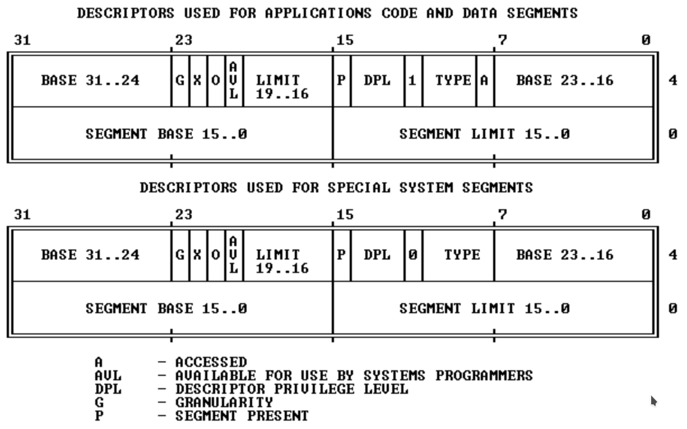

MIT 6.828 Labs 实验记录
本博客中所有代码所对应的github repo地址：6.828
Overall
- 6.828自带了一个打分系统，在Lab文件夹下执行
make grade即可运行这个系统来检验自己的解答。
Build up the environment
Compiler Toolchain
由于Archlinux中的objdump和gcc均满足Lab的要求，不需要手动搭建编译环境。
QEMU emulator
建议follow一下MIT官网上最新版的6.828课程页面。老的课程页面上的链接可能不可用。此处根据Fall 2018的课程页面进行配置。
由于QEMU的调试系统不完善，课程组准备了改进过的QEMU，使它可以与系统中的GDB调试器绑定，并使用GDB来调试。执行以下步骤安装打好补丁的QEMU:
- 执行
git clone https://github.com/mit-pdos/6.828-qemu.git qemu拉取源代码 - 安装各种依赖。在Archlinux下的安装方式如下：
- libdtc：
yay DTC，任选一项安装。 - python：坑爹的是都8102年了这门课还不支持python3.不过Arch一般自带python2,问题不大
- libdtc：
- 进入源代码文件夹，Configure the source code
- 执行
./configure --disable-kvm --disable-werror --python= <pathToPython2>
- 执行
- 执行
make && make install进行安装
安装到一半，报错：
1 | qga/commands-posix.c: 在函数‘dev_major_minor’中: |
很显然是有两个函数major和minor在使用之前并未声明。这是两个库函数，在linux下的<sys/sysmacros.h>头文件中有定义，然而MIT给的代码里并没有包含这个头文件。根据报错信息打开qga/commands-posix.c，添加#include <sys/sysmacros.h>，保存。
再次安装，装到一半又报错：
1 | /usr/bin/ld: ../hw/9pfs/virtio-9p.o: in function `stat_to_v9stat': |
差不多的理由，还是缺少库函数。也不管重复包含dirty不dirty了，向hw/9pfs/virtio-9p.c中添加#include <sys/sysmacros.h>，保存后再次编译。
因为类似的理由，还需要添加这个头文件的源文件有linux-user/strace.c。
Other problems
这里是其他各种各样可能会出现的玄学错误。
Dependencies upgraded
在我完成这个lab的过程中，libnfs库在我滚arch的时候升级了，结果一运行make就会报错：
1 | error while loading shared libraries: libnfs.so.12: cannot open shared object file: No such file or directory |
执行whereis libnfs.so.12，发现系统的库中只有libnfs.so.13，原来是这个库在升级的时候名字变掉了……
没办法，只好用downgrade命令手动降级到4.0.0-2版本，再执行make的时候就没事了。
Lab 1 Booting a PC
Lab1的源码可以从https://pdos.csail.mit.edu/6.828/2018/jos.git处clone到。
Part 1 PC bootstrap
这一部分的目的是让我们熟悉x86汇编语言和PC bootstrap过程，并熟悉QEMU和gdb的操作。
首先在lab目录下执行make命令来编译内核和启动器。编译完成的内核与启动器位于obj/kern/kernel.img镜像文件中，这个镜像文件是一个用于模拟真实硬盘的虚拟磁盘。
执行make qemu可以正式在qemu中运行编译好的操作系统，此时命令行终端会创建一个新的窗口，同时在终端中显示与窗口中同样的内容(并接受同样的输入)。方便起见，这里我们用终端进行接下来的操作。
一开始这个shell只有两条简单的指令：help和kerninfo。后者会打印出目前的内核状态：
1 | Special kernel symbols: |
要退出qemu可以打出Ctrl+a x。
Layout of the physical address space
| —————– | <- 0xFFFFFFFF(4GB) |
|---|---|
| 内存映射的虚拟地址 | |
| —————– | <- 取决于RAM的数量 |
| 扩展内存 | |
| —————– | <- 0x00100000 (1MB) |
| BIOS所在的ROM | |
| —————– | <- 0x000F0000 (960KB) |
| 16位机使用的扩展ROM | |
| —————– | <- 0x000C0000 (768KB) |
| VGA Display | |
| —————– | <- 0x000A0000 (640KB) |
| Low Memory | |
| —————– | <- 0x00000000 |
对于一开始的16位机来说，它们只能使用一共最下面那1MB的物理存储，而可用的内存只有标识为Low Memory的640KB。VGA区是硬件保留区，用于当作视频播放缓冲区等。
就算是在Intel突破了“1MB的瓶颈”之后，PC设计师也仍然对于最低的1MB地址空间使用原始的架构，这是为了软件的向后兼容性。这样就在LowMemory和扩展内存之间留下了一个 空洞 ，为那些16位的软硬件所使用。
在计算机从32位升级为64位时，BIOS在地址空间的最顶段因为类似的理由留下了第二个空洞。
The ROM BIOS
为了单步调试计算机的启动过程，我们需要两个终端，一个用make qemu-gdb来启动qemu虚拟机，一个用make gdb来将gdb调试环境连接到虚拟机上。
make qemu-gdb会将处理器暂停在即将执行第一条指令之前并等待gdb的连接，这时在另一个终端中使用make gdb就可以通过gdb来调试操作系统内核。
gdb终端会显示一段结尾如下的信息：
1 | The target architecture is assumed to be i8086 |
其中的第二行代表着目前将要执行的指令，也就是虚拟机开启过程的第一条指令。
这条指令的含义是：
0xffff0:：指令位于的虚拟存储系统地址，对应于上面的架构，这个位置是属于BIOS的ROM区域的最上面，也就是BIOS程序的起始位置。[f000:fff0]：指示当前CS和IP寄存器的值。CS寄存器指示代码所在的数据段，IP则是偏移量。ljmp：跳转指令，跳转到CS和IP为[f000:e05b]的位置，转换成存储地址就是0xfe05b。- CS和IP寄存器与物理地址的转换规则为
ADDR = CS<<4 + IP。
- CS和IP寄存器与物理地址的转换规则为
保证启动时优先执行BIOS代码是很重要的，因为一开始内存中根本不会有其他可以执行的代码。BIOS会初始化所有启动所需要的重要设备，检查内存和磁盘的挂载情况。最后，就像操作系统课程中所学的那样，它找到磁盘上的boot loader并将控制权转移给它。
- 对GDB使用
si命令可以继续单步调试之后的汇编代码，观察BIOS所做的工作。
Part 2 The boot loader
众所周知，软盘和硬盘都被分成大小为512字节的段，而这些段是系统级IO的最小单位。如果一个磁盘是启动盘，那么它的第一个段就被称为 boot sector ，并被存放boot loader的代码。当BIOS找到一个boot sector后，它就会将其加载到内存中，并将控制权转交给boot loader代码段。
(对于CD-ROM来说，它的前2M都属于boot sector，因此可以存放更大的启动镜像)
在6.828文件夹中，boot loader的代码存放于boot/boot.S与boot/main.c中。这些代码主要完成两件事：
- 将处理器模式切换到
32位保护模式，这样软件才可以访问大于1MB的物理地址空间。这个工作由boot.S完成。除此之外，boot.S还要建立一个程序栈，让C程序得以运行。 - 将内核代码从硬盘中加载到内存，并将控制转交给内核代码的入口函数。这个工作由
main.c完成。
阅读main.c的代码可以发现很多 非常dirty的 细节(包括但不限于：使用goto，while(1)代替sleep，写的很乱的函数指针)，如果对于这个过程的细节感兴趣可以直接阅读源码，注释写的很详细明白。
bootloader的代码会被BIOS加载到0x7c00，这是由boot/Makefrag文件所决定的。修改这个文件中-Ttext参数后面的地址可以让BIOS从其他地址来加载，执行make clean && make重新编译可以查看这样做会引发什么样的系统错误(事实上系统会停机并进入一个无限循环等待用户的操作)；在GDB调试时可以在这个位置设置断点，以精确地进入bootloader代码段。
obj/boot/boot.asm和obj/kern/kernel.asm分别包含着bootloader和kernel的反汇编结果以及注释，可以用于调试和分析。下面就来分析一下BootLoader的代码逻辑。
- BootLoader代码逻辑研究
- 第一阶段：初始化
- 宏常量的设定：
.set CR0_PE_ON 0x1这个常量是控制32位保护模式开关的指标。 - 全局设置：
cli指令关闭中断处理，cld指令将串操作的内存地址访问模式设为增序- 这两个指令其实是设置了
DF和IF两个标志位的值
- 这两个指令其实是设置了
- 寄存器初始化：用xor和mov指令将几个关键寄存器清零
ds：数据段寄存器，存放全局变量区域的头指针ss：栈段寄存器，存放堆栈段的首地址(esp寄存器存储的是偏移量)es：扩展段寄存器
- 宏常量的设定：
- 第二阶段：打开32位保护模式
- 开启A20地址线：在16位模式下，用于寻址的地址总线只有20根，这种情况下大于1MB的地址空间是全部被置为0的。只有开启20～23号四条地址线，才能对1MB以上的地址空间进行寻址，从而进入32位模式。
- 通过一个循环来等待A20设备准备完毕：用
in指令从0x64端口接受信息，如果不是代表准备完毕的信息则继续循环。 - 向
0x64和0x60端口发送信号，打开A20地址线。
- 通过一个循环来等待A20设备准备完毕：用
- 建立32位段虚拟内存与物理存储器的映射关系表：
lgdt gdtdesc指令。 - 启动32位保护模式：用
CR0_PE_ON与cr0寄存器的值做或运算，打开32位保护模式。cr0到cr3四个寄存器是系统控制寄存器，它们的值直接决定系统的运行状态。cr0控制的是处理器，因此可以通过修改其值来进入其他运行模式。 - 跳转到32位代码区的下一条指令。
- 开启A20地址线：在16位模式下，用于寻址的地址总线只有20根，这种情况下大于1MB的地址空间是全部被置为0的。只有开启20～23号四条地址线，才能对1MB以上的地址空间进行寻址，从而进入32位模式。
- 第三阶段：修改段寄存器的值为32位区地址，初始化
esp寄存器的值，建立C程序栈 - 第四阶段：进入
main.c的bootmain函数，开始读取内核代码。 - 第五阶段：跳转到内核代码区，交还控制权。
- 第一阶段：初始化
习题解答
Q: 处理器什么时候开始执行32位代码？哪条指令切换了处理器模式？
A：
0x7c2a: mov %eax,%cr0指令切换了处理器模式，从随后的跳转指令开始，处理器开始执行32位代码。Q：Bootloader执行的最后一条指令是什么？kernel执行的第一条指令又是什么?
A：Bootloader执行的最后一条指令是向内核代码段跳转的指令
0x7d71: call *0x10018，kernel执行的第一条指令是0x10000c: movw $0x1234,0x472。Q：Bootloader是如何决定它要读取多少数据的？它从哪里获取的kernel大小信息？
A：Bootloader首先从内核代码区读取了长度固定的ELF头部，再从头部中获取了这个区域是否为ELF文件、数据段数量、每段的长度、起始地址等信息。
(课程网页在这一部分讲了一大堆ELF头和指针的知识，如果已经学过CSAPP第7章的话完全可以跳过。需要注意的是，6.828所采用的可执行目标文件代码 并非是位置无关代码 ，因而 链接器会将程序将加载到的内存位置写在文件中 。利用这一点，我们可以执行objdump -f <filename>命令，获取程序在内存中的入口位置。)
Part 3 The kernel
在内核被授予控制权后，它要做如下几件事：
Virtual memory address mapping
当我们观察bootloader程序的时候，我们可以发现它的 链接地址(指用objdump -h打印出来的ELF节头部信息中的LMA，linked memory address) 和 虚拟地址(指用objdump -h打印出来的ELF节头部信息中的VMA，virtual memory address) 是完全一致的；然而对于kernel，这两个地址却有着不小的差距。
操作系统内核常常会在非常高的虚拟地址空间(例如0xf0100000)运行，这是为了把比较低的虚拟地址空间留给用户进程使用。然而大部分机器没有这么多的内存，于是它们将虚拟地址0xf0100000映射到物理地址0x00100000。这样一来虽然内核所在的加载地址很高，它的实际加载地址却是位于RAM区域的最底端，挨着BIOS所在的ROM地址区域。
虚拟地址映射操作是由专门的硬件来完成的，要打开虚拟地址映射只需要对cr0寄存器设置CR0_PG标志，就像之前打开32位保护模式所做的那样。除此之外，为了能让虚拟地址映射正常工作，我们需要将页表的首地址装入cr3寄存器。
kernel被加载的地址为0x100000,因此它从此处开始运行。它所做的第一项工作就是打开虚拟地址映射，然后跳转到虚拟地址0xf010002f的位置，恰好对应于物理地址中下一条指令所在的位置。这样，内核就自然地实现了从物理地址到虚拟地址的转换。
Formatted printing to the console
在完成虚拟地址映射之后，下一步是对终端进行格式化输入输出以创建交互式操作界面。
lib/printfmt.c中提供了输出函数的原型，kern/printf.c和kern/console.c则提供了有关内核输出和交互的函数。
Answer to Exercise 8
本题要求补全printfmt函数对于
%o(8进制输出)的处理机制，只需要仿照下面十六进制的机制即可。
1 | case 'o': |
习题解答
Q：解释printf.c和console.c之间的接口，尤其是console.c中的哪个函数被如何用于printf.c。
A：console.c向printf.c提供了cputchar函数,它希望在调用printf.c中的输出函数时可以利用cputchar函数来输出每一个字符。printf.c遵守这个约定,以包含cputchar的外壳函数调用printfmt.c中的输出函数,保证了所有输出都按照console.c所规定的标准来输出。
Q：解释console.c中的这一段代码:
1 | if (crt_pos >= CRT_SIZE) { |
A：
这段代码来自cga_putc函数,这个函数是在CGA显示屏图形卡上打印字符的函数。crt_pos是一个整形全局变量,它的含义是目前光标在屏幕上的位置。阅读
console.h的内容可以发现CRT_SIZE被定义为屏幕上能够容纳的字符个数,而CRT_COLS则是屏幕的宽度。条件判断是为了确认当前光标的位置是否已经超出了屏幕底端。如果超出了，就把屏幕上第二行到最后一行的内容全部上移一行，并将空出来的位置用
0x0700 | ' '填满。总而言之，这段代码是为了实现屏幕满了之后向上滚动的功能。
Q：单步调试如下代码：
1 | int x = 1, y = 3, z = 4; |
- 在对cprintf的调用中，fmt对应的实参是什么？ap呢？
- 列出对
cons_putc,va_arg和vcprintf的每一次调用，以及cons_putc的参数,va_arg中ap的指向和vcprintf的参数值。A：
- fmt对应的实参是
"x %d, y %x, z %d\n"，ap指向带有x，y和z的参数数组。- 甚至不需要单步调试，自己阅读
lib/printfmt.c就足够了。Q：运行如下代码：
1 | unsigned int i = 0x00646c72; |
解释输出结果。如果这段代码运行在大端序机器上而非小端序机器上，你会如何修改它来得到同样的结果？
A：输出结果是
He110 World。前面的e110是57616在十六进制下的表示(因为使用了%x)，后面的rld是字符串输出的结果。int占4个字节而每个字符占一个字节，因而i所占的内存空间与一个长度为4的字符数组是相同的。这样一来，如果用i的地址去输出字符串，就会从i的地址开始按字符去读取内存中的数据，直到读到0为止。由于运行在小端序机器，0x72排在最前面一个字节，被解析成ASCII码值为0x72的r；接下来0x6c和0x64分别被解释为l和d。最后一个字节是0x00,正好是字符串终结符。如果机器是大端序，只需要将i修改为
0x726c6400即可，57616不需要改变。Q：被
cprintf("x=%d y=%d", 3);打印出的y值会是多少？为什么？A：会是一个随机的整形数。因为cprintf解析到了两个
%d符号，但ap的长度只有1,这导致第二个%d读到了一片未赋值的内存地址，其值自然是随机的。
The Stack
(仔细读过CSAPP第三章的话汇编语言和程序栈这一块应该没问题了，就不说了)
Answer to Exercise 9
Q：确定内核在什么时候初始化程序栈及程序栈的初始位置。内核是如何为栈保存空间的？
A：
f010034: mov $0xf0110000, %esp：这一条指令初始化了栈指针，将程序栈建立于虚拟地址0xf0110000位置。从这个地址开始，程序栈随着程序运行向下增长。
ebp指针被称为“基指针”，它的作用是追踪每个函数的栈帧位置。每个被调用的C函数都要进行如下操作：将ebp寄存器的值压栈、将当前esp指针值拷贝到ebp寄存器。在返回之前，这个函数从栈中取出并恢复ebp寄存器的值。通过这种机制，任何时候ebp寄存器的值都指向正在执行的函数的栈帧头部，而栈帧头部的前一个数据节的值指向该函数调用者的栈帧头部，于是可以通过ebp链来还原函数调用链。
Answer to Exercise 10
这个Exercise的目的是让学生熟悉backtrace的操作和C的程序栈结构。在kernel中有一个自我递归的
test_backtrace函数,通过对这个函数打上断点可以使用p $ebp获取每次调用的栈帧起始位置.第一次调用:栈帧的起始位置为
0xf010ffd8
第二次调用:栈帧的起始位置为0xf010ffb8可以看出这个函数的每个栈帧大小都是
0x20,也就是32个字节，对于32位系统来说是八个数据。使用
x/xw命令查看从0xf010ffe0开始整个栈帧的结构。(因为32位系统每个数据是四个字节，所以使用x/xw来查看)
x/xw 0xf010ffe0：0x00000005按照栈帧的结构，这个位置应该是调用者压入栈内的参数。第一次对test_backtrace的调用的确只有一个实参5。
x/xw 0xf010ffdc：0xf01000f4由于栈帧是向下的，这条指令其实查看的是上一个栈帧的最后一部分，也就是函数的返回地址，经验证的确指向调用者的下一条指令。
x/xw 0xf010ffd8：0xf010fff8当前函数栈帧的第一部分，保存着上一个函数的基指针值(%ebp的值)，由于上一个函数已经是整个程序栈底部的函数了，这个地址向上就没有数据了，上个函数的基指针指向的是物理内存区的函数。
x/xw 0xf010ffd4：0x000100b4被调用者保存的%esi寄存器的值
x/xw 0xf010ffd0：0xf011304c被调用者保存的%ebx寄存器的值
x/xw 0xf010ffcc：0xf010004a是test_backtrace中一行代码的地址
x/xw 0xf010ffc8：0x00000000空的，没有数据
x/xw 0xf010ffc4：0x00000005局部变量5
x/xw 0xf010ffc0：0x00000004即将进行下一次递归调用，这是压入的参数4再往下就是返回地址，然后就是下一个栈帧。总的来说，
test_backtrace函数的栈帧结构就是这样。
完成了对栈帧结构的观察后，就可以利用观察结果去做一下任务了。Exercise 11要求我们实现一个mon_backtrace函数，它记录并打印出栈帧信息。inc/x86.h中提供了read_ebp()函数可以直接返回ebp寄存器的值。
输出格式规定如下：
1 | Stack backtrace: |
Answer to Exercise 11
本题要求是按上面的要求修改
kern/monitor.c中的mon_backtrace函数，并将其添加到指令集中。对代码的修改如下：
1 | // 第一处修改 |
Exercise 12要求我们升级这个函数，使其支持如下的输出格式：
1 | Stack backtrace: |
为了根据eip找到函数名，行数和文件名等一系列信息，kern/kdebug.c中提供了debuginfo_eip()函数，我们需要完整地实现debuginfo_eip()函数，并在mon_backtrace中调用这个函数来获得信息。
Answer to Exercise 12
在
debuginfo_eip函数中有一些以__STAB_开头的宏常量,它们所代表的是ELF文件中.stab(在CSAPP中是.symtab)区的开头和结尾位置,以及.stabstr(在CSAPP中是.strtab)区的开头和结尾位置,它们是在链接过程中由kernel.ld定义的。以下是修改内容：
1 | // kern/monitor.c |
至此Lab1结束。运行make grade，50/50大成功。
Lab2 Memory Management
在这个Lab中，我们需要实现操作系统的内存管理系统。内存管理系统包括两个部分：
- 物理内存调度：我们要实现一个以4096个字节大小的页为单位的内存分配器，它将空闲的内存分配给内核和用户，并释放使用完的内存。
- 虚拟内存映射
执行git checkout -b lab2 origin/lab2命令切换到lab2分支，执行git merge lab1合并在lab1所做的更改。
Lab2增加的文件有：
inc/memlayout.h：定义描述虚拟内存空间的布局的函数，定义PageInfo结构体kern/pmap.c和kern/pmap.h：实现inc/memlayout.h中定义的函数kern/kclock.c和kern/kclock.h：与CMOS硬件沟通，读取PC的硬件信息
inc/mmu.h中记录了应当烧录于MMU
单元中的逻辑代码，同样可能对这个lab有所帮助。
Background knowledge
由于虚拟内存是将很小的物理内存映射到很大的虚拟内存空间，这个映射关系需要一个输入地址和一个输出地址才能作用。物理地址是物理内存中真实的地址，可以直接由硬件寻址得到；虚拟地址/线性地址是物理地址通过转换得到的，用于虚拟内存空间索引的地址。
mmu.h中详细地介绍了线性地址的结构。大体上讲，线性地址分为三段：
Page directory index：页目录的序号(10位)Page table index：页表的序号(10位)Page offset：地址在页内的偏移(12位)
从线性地址的三段式结构可以看出，每个页表包括1024(2的10次方)个页，每个页目录包括1024个页表，而每一页的大小是4096个字节(也就是4KB)。
3段加起来的总长度是32 bits，也就是4个字节，这代表着线性地址可以用一个int32变量表示。
我们可以使用宏命令来取出线性地址的各个段，或将线性地址映射为物理地址。在本lab中，虚拟地址似乎是特指物理地址+固定偏置值所映射到的地址。
在memlayout.h中可以查看到整个虚拟内存地址空间的分配，在此列出并加以解释：

0xf0000000以上：Remapped physical memory，物理内存的原样映射，这一部分为虚拟地址0xefc00000以上：内核栈区域，存放各个CPU的内核栈。0xef800000：内核内存区和用户内存区的分界线，这以上用户不可读写
0xef400000以上：页表区域0xef000000以上：页区域0xeec00000以上：当前进程的环境变量区域0xeec00000：用户只读区和读写区的分界线，这以上用户只有读权限
1 PGSIZE：用户的异常栈1 PGSIZE：用户栈，可以增长一段留空内存0x00800000以上：用户的堆区域和程序数据- 以下：用户的符号表区域和空内存
Definitions guide
6.828的代码充满了缩写这种使人不明所以的命名,且有些地方码风诡异,因而将一些可能用到的概念和缩写列举如下:
V和P:带V的标识符指virtual,与内核虚拟内存有关；而带P的标识符往往指physical,与物理存储有关。如：kva:kernel virtual address的简写pa:physical address的简写la:linear address的简写
PT和PD：分别指page table和page directory。U和K:带U的标识符指User，而带K的标识符指Kernel。如：UVPT：User virtual page table的缩写，是用户页表的开始地址。UTOP：用户地址空间的上限
为了实现目标功能的代码，我们需要调用许多定义好的函数或者宏，为了方便查看和使用将一些可能需要使用的函数和宏列举如下：
pmap.h:PADDR(addr):将虚拟地址addr转换为物理地址返回KADDR(addr):将物理地址addr转换为虚拟地址返回PTE_ADDR(addr):将物理地址addr中的权限位去掉page2pa(PageInfo*):将PageInfo结构体转换为对应Page的物理地址pa2page(addr):将物理地址转换为pages数组中的PageInfopage2kva(PageInfo*):将PageInfo结构体转换为对应Page的虚拟地址
mmu.h:PDX(la):将线性地址转换为页目录(page directory)的索引
Part 1 Physical page management
在这个部分我们需要实现物理内存管理器。这个函数追踪一个由PageInfo结构体组成的链表(这个链表的节点代表着一页未分配的内存)，并负责物理内存的分配和回收。
要想完成这部分的任务，必须要提前了解虚拟内存系统的概念(可以参考操作系统专业教材或者计算机系统教材)，才能看懂并运用各种神奇的操作。
boot_alloc
这个函数是在建立虚拟内存系统过程中用来为数据结构分配内存空间的，在虚拟内存系统建立之后就会废弃。因而，其功能比较简单。
值得注意的是，这个函数首次调用的时候，会从内核区bss段的结束处开始分配内存块，具体的位置是通过extern从链接器那里得知的。首次调用情况下的代码已经被完成了，我们只需要照葫芦画瓢地完成之后调用时的代码即可。
这里所谓“内核区bss段的结束处”是指内核区中没有分配代码段和数据段的第一个位置，它在虚拟地址空间中的位置在0xf0000000以上的部分，也就是物理内存的映射区。从这里开始，我们开始建立用于管理虚拟内存的内核数据结构。
- panic函数可以被当作printf的一个能够引发中断的版本。灵活利用它可以方便地调试系统。
1 | if (!n) return nextfree; |
mem_init
这个函数首先用之前实现好的boot_alloc函数分配了 一页 空闲内存，初始化之，并用一个kern_pgdir指针指向了这片内存的起始位置。这一片区域用来存放page directory。
接下来是我们的工作：为一个页数组pages分配内存。
pages数组存储了每个分页的信息，其索引和页的物理地址可以用函数相互转换。可以说，pages的每一个元素都唯一对应着一个物理页面。
1 | pages = (struct PageInfo *) boot_alloc(sizeof(struct PageInfo) * npages); |
这样我们就已经为内存分配相关的内核数据结构分配好了空间。接下来，mem_init函数调用page_init函数，去初始化所有物理内存分页。这个步骤结束之后，所有内存相关操作都可以通过page开头的函数来完成。
page_init
Lab中已经给出了示例代码，但是这段代码是不严谨的(它将所有物理内存页都标记为是free的)，有几处问题没有考虑到：
- 物理页面0应该标记为used。这是因为这一部分保存着BIOS数据结构和IDT(中断描述符表)，我们以后可能会用到这些结构。
- 之前讲到过的由于考虑到向后兼容性而留下的
IO hole不应该被分配。 - 在
IO hole之后就是extended memory部分，这一部分中的有些位置存放了内核代码和内核数据结构，因而这些位置不能标记为free。
我们的任务是修改代码，使其只将那些该标记为free的放进page_free_list。
考察memlayout.h中的PageInfo结构体，可以发现其属性pp_ref用于指示引用这一页的进程数量,而pp_link指向空闲链表中下一项的地址。对于要放入page_free_list的pages，我们将其pp_ref设定为0，并利用pp_link将其插入空闲链表。
本任务的难点在于如何确定Extended Memory中的哪一部分已经被Kernel所占用。观察之前的代码可以发现，boot_alloc是从kernel代码和数据段的结束位置开始分配内存的，而kernel代码段的起始位置是IO hole的结束位置(0x100000,参考Lab 1)，这意味着从IO hole到boot_alloc分配的最后一块内存末尾之间的所有内存都是被占用的。
而根据之前的两个函数，boot_alloc分配的最后一块内存应该就是页表的最后一块内存(也就是pages数组的末尾)，因此我们从pages的头地址开始向后应该就可以找到kernel占用内存区的末尾位置。
根据这些信息，可以修改代码如下：
1 | size_t i; |
page_alloc
这个函数就是很简单的链表操作，仔细阅读注释的内容即可正确实现：
1 | // Returns NULL if out of free memory |
page_free
同样没有什么难度，直接贴出代码。
1 | if (pp->pp_ref) panic("This page is still occupied by other processes."); |
Part 2 Virtual Memory
在开始这一部分之前，先要对几个地址之间的转换有一个大概的了解。
Segments
在保护模式下，有关段的信息是非常复杂的。对于一个段来说，除了段基地址之外，还有段的大小，特权级，类型，是否被执行过，读写权限等等多种信息要保存。用于描述这些信息的数据项称为 描述符(Descirptor) 。
描述符一般用4个字来表述所有信息，具体的描述符结构如下图所示：

其中各个部分的作用：
- 第一个字：段的界限，也就是这个段的长度。需要注意的是一个段的长度是用20位来表示的，因此这个字表示的段界限是不完整的，需要和描述符中另一段数据拼接起来才是完整的段界限。
- 第二个字：段的基址，段在虚拟地址空间内的起始位置。由于虚拟空间地址是32位的，这个字同样无法表示完整的段基址，需要与另外两段数据进行拼接。
- 第三个字：
- 高字节分为如下几个字段：
P：存在位，表示该描述符对应的段是否已经读入内存。DPL：长度为两位，表示该段所属的特权级1或0：记录段的类型是存储段还是系统段TYPE：记录段的属性- 如果是存储段，那么是代码段还是数据段
- 段的读写权限如何
A：访问位，记录段是否被访问过
- 低字节为段基址的16-23位。
- 高字节分为如下几个字段：
- 第四个字：
- 高字节为段基址的24-31位。
- 低字节分为如下几个字段：
G：粒度位，G=0说明段长度的单位是Byte，而G=1说明单位是page。X：用于区分32位和16位访问方式。O和AVL：保留位和系统专用位LIMIT：段界限的16-19位
所有的描述符都储存在 描述符表 中。描述符表分为以下三类：
LDT：局部描述符表。每个进程都有它自己的局部描述符表，存放在一个特定的系统段内。LDT中存放着对应进程的代码和数据段位置等信息。GDT：全局描述符表。只有一个，存放着操作系统内核使用的描述符和所有系统段的描述符。通过GDT可以去索引所有的LDT。IDT：中断描述符表。用于定位所有的中断处理程序。
在这个Lab中，我们暂时不涉及内存的分段机制，因而GDT中每个描述符的base为0而limit为0xffffffff。在kernel代码段中我们已经建立了一个简单的页表(能够映射4MB大小的内存),现在我们需要做的是拓展这个页表以映射整个虚拟内存。
Pages
在Background knowledge里面我们已经讲了线性地址的构成，现在为了能够完成下面的实验，需要进一步了解一些关于页目录和页表的知识。
在MMU取到一个线性地址la时，它会首先取出la中的 页目录索引部分 ，并用其与cr3中存放的页目录首地址结合去找到la所在的 页表首地址 。在此之后，MMU取出la中的 页表索引部分 ，与之前找到的页表首地址结合来找到la所对应的具体 页表项 。
在这个过程中，la所在的页目录表项被称为 DIR entry ，而它所在的页表表项被称为 Page table entry。Directory entry中存放的物理地址与la的页表索引部分的结合是Page table entry的地址，而page table entry中存放的物理地址与la的偏移部分的结合是la所对应物理页的地址。
每个PDE或者PTE的内容都是phyaddr和 权限位 的组合。因为PDE和PTE的内容都指向一个物理页的首地址，它们的最后12位是用不到的。这12位被内存管理系统用作权限位，每一位都代表一个特定的权限，管理系统通过将这些位置0或置1来设定这一页的权限。
Addresses
Exercise 3
你可以在
qemu-gdb中键入ctrl-a c来进入qemu的monitor。在这里，你可以用xp命令来查询指定物理地址的数据(xp指令的用法与gdb的x指令类似)。与此同时，在gdb中用x指令可以查询指定虚拟地址的数据。将存在映射关系的虚拟地址与物理地址存放的内容作对比，看看是否是一致的。
JOS的源代码定义了uintptr_t来存放虚拟地址，而physaddr_t用来存放物理地址。
Question
Q:如果下面的代码是正确的,变量x的类型应当是uintptr_t还是physaddr_t?
A:uintptr_t,因为C中的指针都是指向虚拟地址的.
JOS内核有时需要读取或修改只知道物理地址的内存。例如，向页表添加映射可能需要分配物理内存来存储页目录，然后初始化该内存。但是，内核不能绕过虚拟地址转换，因此不能直接修改物理地址。这就是为什么我们要把物理内存用一个线性函数映射到虚拟内存中0xf0000000以上的区域:这方便了内核直接操作物理内存。PADDR和KADDR两个宏定义让我们可以很方便地实现物理地址和虚拟地址之间的转换。
page management
我们知道，同一个物理页面可能会被映射到数个不同虚拟空间的数个虚拟页面，我们通过修改PageInfo结构体中的pp_ref属性来反映这一点。每当我们分配一个UTOP以下的页面，我们让该物理页面的pp_ref属性+1。(UTOP以上的页面属于内核，它们永远不应该被free，因而无需更改这个属性)
需要注意的是，我们在实现page_alloc函数时并没有让它去增加pp_ref属性值，因此调用page_alloc的函数需要 自行增加这个属性的值 。
pgdir_walk
这个函数接受一个线性地址和一个页目录，返回线性地址对应的页面所在页表的物理地址。为了达成这个目的，我们可以通过线性地址中的页目录索引部分去找到页目录中的对应页表地址。如果这个页表还没有被创建，且create参数为真，那就创建一个新的页表并返回它的物理地址。
根据函数前面的注释，MMU会同时检查页目录表项和页表表项中的权限位，因而我们对于页目录中新页表物理地址的权限可以把要求放宽松一点。
1 | // Find the page table where va locates. |
boot_map_region
这个函数将一段指定的虚拟地址映射到同样长度的指定的物理地址。因为映射以页为单位，我们可以依次映射这段地址中的每一页：
1 | int page_num = size / PGSIZE; |
page_lookup
这个函数寻找va在pgdir中的页表地址和物理地址。依照注释完成,没有多大难度。
1 | pte_t* pgtab = pgdir_walk(pgdir, va, 0); // Page table address |
page_remove
这个函数移除va指定的页。基本上都是在调用函数，只要认真阅读了注释即很简单。
1 | pte_t *pg_pte; |
page_insert
这个函数将pp插入va所指定的位置。这个函数的一个很容易出错的边界条件是将一个 原本空闲的 page 连续插入两次 ，按正常的逻辑第二次插入应该不会有任何影响，但实现不当的话会出现问题。
如果先进行page_remove再增加引用数的话，首先在调用page_remove的时候这个page已经进入了page_free_list，但接下来我们接着又要用到这个page且没有经过page_alloc，这样一来这个page既在空闲链表中引用数又不为0，会成为一个bug。
根据注释的提示，有一种优雅的无需条件判断的方式可以解决这个问题。这种方式就是 将增加引用数的步骤提前 ，这样这个页面在page_remove之前引用数就是2，就不会在page_remove中被回收到page_free_list中。
1 | pte_t* pgtab = pgdir_walk(pgdir, va, 1); |
Part 3 Kernel address space
JOS的地址空间被ULIM划分为两个部分：用户地址空间 和 内核地址空间 。后者大概拥有256MB的剩余空间可以使用。
由于用户区和内核区同在一个地址空间内，我们需要使用页表管理中的 权限位 来保证用户只能访问用户区的页。
- 常用的权限位：
PTE_P: 页面存在PTE_W: 该页是可写的PTE_U: 该页可以由用户访问
用户不应有访问任何ULIM以上内存的权限,而内核应当能读写这一块区域。在UTOP和ULIM之间的区域是 只读区(对用户和内核都是) 。低于UTOP的内存区域权限由用户自行设置。
Initializing the Kernel Address Space
Exercise 5
这个任务要求我们补全mem_init函数。
第一段要求我们把整个pages数组映射到UPAGE地址以上。
1 | // Cautious: we map the phyaddr of pages instead of their content |
第二段要求我们把内核栈映射到KSTACKTOP-KSTKSIZE到KSTACKTOP区域。
1 | boot_map_region(kern_pgdir, (KSTACKTOP-KSTKSIZE), KSTKSIZE, PADDR(&bootstack), PTE_P | PTE_W); |
第三段要求我们映射整个内核区域。
1 | unsigned kern_size = (unsigned)~0 - KERNBASE; |
三段都是看着注释调函数即可，没有很大难度。不得不说6.828的注释仔细研究可以省去很多精力。
Questions
Q：在这个过程中哪些PDE被填入了信息？它们对应哪些线性地址，又指向哪些物理地址？
A：被填入的PDE索引：
- 956-UPAGES，线性地址0xef000000,指向pages数组在物理内存中的首地址
- 957-UVPT，线性地址0xef400000,指向kern_pgdir在物理内存中的地址
- 959-KSTACK，线性地址0xefc00000,指向bootstack数组在物理内存中的首地址
- 960～1023-内核内存区，线性地址0xf0000000以上，指向物理内存地址0。
Q：既然我们把用户和内核的内存区域放在同一个地址空间中，到底是什么机制保护了内核内存不能被用户访问？
A：权限位
PTE_U决定了一页能否被用户访问。Q：这个操作系统能够支持多大的物理内存？为什么？
A：内存空间内能存放pages的空间是一个PTSIZE，也就是最多能够映射PTSIZE/sizeof(struct PageInfo)个页面，每页大小为4KB，因此总共能映射的物理内存大小为2GB。
Q：如果我们拥有能支持的最大的物理内存，管理这些内存需要多少空间开销？如何减少这些开销？
A：管理满载的512K个页面需要512个页表，每个页表占内存空间都是一个PGSIZE，总共就会有4MB左右内存用于页表储存。加上用于存放pages的4MB和页目录的4KB，总共会有8MB左右空间开销。如果把PGSIZE取大一点，这种开销就可以稍微减小。
Q：在我们刚打开分页机制的时候，程序还运行在低地址，控制流在什么时候跳转到KERNBASE以上？为什么在打开分页机制之后我们仍能够运行在一个低地址？
A：在打开分页的下一步，控制流就用jmp指令跳转到了KERNBASE以上的高地址。打开分页机制后仍能在低地址运行的原因是低地址和KERNBASE以上的高地址都被映射到同一片物理内存，这是为了保持兼容性。
完成上面的所有代码之后，运行make grade，70/70大成功。
Challenge
这个挑战的内容主要是为JOS的monitor加入一些实用的指令，以方便之后的调试过程，具体的指令细节可以自己调整和定制。增加指令后，要记得在monitor.h中添加声明。
我主要做了以下几条指令(下面是修改后的Commands数组)：
1 |
- pageinfo
这个指令接受一个命令行参数。
pageinfo addr：打印出虚拟地址addr所在的页目录，页表，以及所在的物理页面，物理地址。
如果addr使用十六进制地址，必须在数字前面加上0x。
代码实现：
1 | // Must include pmap.h in monitor.c |
- chperm
这个指令接受三个命令行参数。
chperm <PDX> <PTX> <perm>：修改<PDX>和<PTX>对应页面的权限。
<perm>的使用方法：
+：增加一种权限-：消除一种权限w：对应于PTE_Wu：对应于PTE_Up：对应于PTE_P
使用样例：chperm 960 256 -w
1 | // Change the permittions of a certain page. |
- man
虽然命名为man，但是其实这个命令的行为更像--help。
需要注意的是，每增加一条新的命令就要增加command_usage数组的内容。并且，这个数组中的元素顺序必须与commands数组中的顺序一致。
1 | char* command_usage[] = { |
在这一章的最后还有几个挑战，一个是实现一种不同的分页机制使用户可以不受限制地使用整个4GB内存空间，由于并没有什么主流操作系统使用这种模式就没写。另一个是实现一个类似于malloc/free堆内存分配的分配机制，过于麻烦，等有空再写这个吧。
Summarize
总结一下JOS使用的内存管理机制：